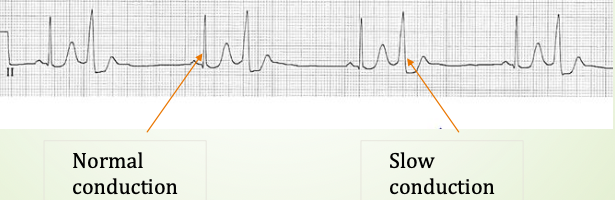
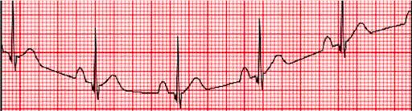
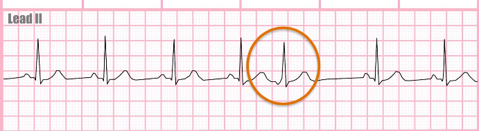
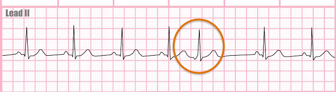

Cardiac Cycle
P waves
- P waves represent atrial depolarization (contraction)
- Morphology: usually upright in Lead II, consistent shape
- Changes in the P wave and PR interval indicate conduction of the atria
PR Interval
- Short PR interval indicates less time taken to travel through atrial pathways and distance traveled thus shorter than normal, short PR interval indicates an atrial ectopic pacemaker
- Normal, consistent PR interval validates cardiac cycle originates in the sinus node, “normal” beat
- Long PR interval indicates prolonged AV slowing, an AV block
P:QRS ratio
In a normal cardiac cycle every P wave generates one QRS complex
- Multiple P waves/ QRS complex: atrial flutter
- P wave without QRS complex-AV block second degree or higher
QRS conduction
Narrow versus wide QRS
- Narrow QRS (< 0.10 sec) indicates normal conduction through the ventricles – “you can never be too thin” (in pediatrics very small hearts have a very narrow QRS) QRS > 0.10 sec but < 0.12 indicates slowing in the ventricles but is not considered clinically significant
- Wide QRS (> 0.12 sec) indicates clinically significant slowed conduction through the ventricles

ST Elevation/Depression
- In normal conduction the ST segment, from the J point to the T wave, will be at baseline level
- Elevation or depression (usually 3 or more small boxes) of the ST segment may indicate ischemia or myocardial damage

Artifact and Interference
- Multiple environmental effects may alter the telemetry signal causing error in interpretation, these include:
- Loose lead connection: aberrant tracing may mimic fibrillation (atrial or ventricular)
- Movement: wandering baseline
- Muscle Tremor: mimics fibrillation or may distort signal to unreadable
- Electrical/Magnetic interference- classic 60 cycle distortion of waveform ie "fuzzy" tracing
- CPR artifact-may resemble ventricular tachycardia
- Neuromodulation: TENS units or other implantable devices with electrical signals, may resemble SVT or other aberrant rhythms
- Callorborate with unit to identify and correct the interference, communicate presence of artifact in shift handoff report both at bedside and monitor station
Artifact


Monitor Tech : when to call?
- Call for all Lethal Rhythms: 3 Degree Heart Block, Ventricular Fibrillation, Ventricular Tachycardia, Asystole
- Change in rhythm that significantly changed cardiac Output
- Tachy and Brady alarms
- Ectopic Beats
- Transports and removed from telemetry and not replaced within notified time to be off monitoring
- Collaborate with unit if artifact/interference present in telemetry signal
- Document escalation (report to clinican) all of the above
* Note if a SWAT consult or Code is initiated upon notification of rhythm verify with the unit when to resume monitoring and continued notification of alarm triggers.
Physical Assessment
RN's must perform a rapid cardiac assessment to confirm the rhythm interpretation is consistent with the cardiac ouput of the tentative rhythm interpretation
Absence/Presence of a pulse
- Does the tentative interpretation of the rhythm generate adequate perfusion- palpable pulse?
- Does physcial assessment agree with interpretation-perfusion normally present with rhythm however physical assessment without a pulse, pulseless electrical activity (PEA)
Patient condition stable vs nonstable
- AHA definition of a stable rhythm is one which generates a systolic BP > 90 mm Hg
- Patient LOC, compared to patient baseline
- Rapidly changing hemodynamic status
Need for intervention emergent vs urgent vs non-urgent
- Emergent - based on assessment, intervention indicated prior to notification of physician i.e. cardiac arrest, may follow AHA Basic Life Support (BLS) protocols proceeding to Advanced Cardiac Life Support (ACLS) protocols on arrival of physician/physician extender
- Urgent - based on assessment intervention indicated with immediate notification of physician or follow approved urgent intervention protocols
- Non-urgent - based on assessment intervention indicated with notification of physician, not life threatening, may follow approved intervention protocols


 
